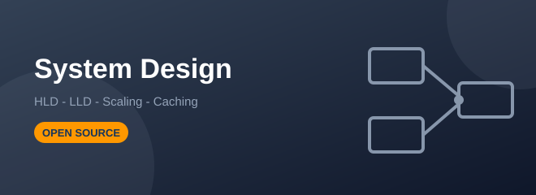
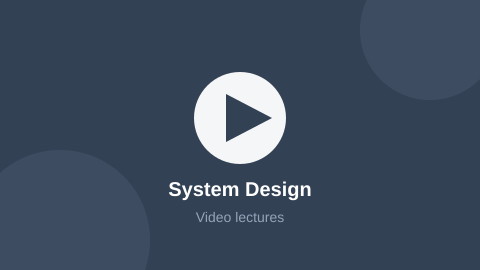

System Design
HLD and LLD: scaling, caching, sharding, queues, microservices and design patterns.
Course Information
| Level | Advanced — final year |
|---|---|
| Duration | 10 weeks |
| Credits | 3 |
| Pre-requisite | DSA track, plus basic databases and networking. |
| Material | Open source — every module links to its original tutorial |
About This Track
System design asks a different question from DSA: not “what is the fastest algorithm” but “what happens when ten million people use this at once”. The track is split into high level design — the boxes and arrows of a large system — and low level design, which is clean object oriented code and design patterns.
The reading list is built on the open source System Design Primer repository on GitHub and the GeeksforGeeks system design tutorial. Design patterns are studied from Refactoring Guru, and every case study ends by comparing our design with a real engineering blog.
What You Will Learn
- Estimate traffic, storage and bandwidth before drawing anything
- Scale a system horizontally with load balancers and stateless servers
- Choose the right cache strategy and handle cache invalidation
- Decide between SQL and NoSQL, and shard or replicate a database
- Apply the CAP theorem and explain the trade-off you accepted
- Write clean LLD with SOLID principles and the common design patterns
Syllabus
| # | Module | Topics Covered | Weeks | Study Material |
|---|---|---|---|---|
| 1 | HLD Foundations | Client-server, latency numbers, capacity estimation, availability, SLA | 2 | System Design Primer |
| 2 | Scaling & Load Balancing | Vertical vs horizontal, load balancer algorithms, stateless design, CDN | 2 | GfG System Design |
| 3 | Caching & Databases | Redis, cache strategies, eviction, indexing, sharding, replication, CAP | 2 | GfG CAP Theorem |
| 4 | Async & Microservices | Message queues, Kafka, pub-sub, API gateway, service discovery, rate limiting | 2 | ByteByteGo Blog |
| 5 | Low Level Design | OOP, SOLID, UML, singleton, factory, observer, strategy, decorator | 1 | Refactoring Guru |
| 6 | Case Studies | URL shortener, rate limiter, WhatsApp, YouTube, Uber, notification service | 1 | roadmap.sh System Design |
Code From The Lab
Sample from Module 5 — Strategy pattern in the LLD module
// One payment service, many payment methods - no if-else chain.
interface PaymentStrategy {
void pay(double amount);
}
class UpiPayment implements PaymentStrategy {
public void pay(double amount) {
System.out.println("Paid " + amount + " using UPI");
}
}
class CardPayment implements PaymentStrategy {
public void pay(double amount) {
System.out.println("Paid " + amount + " using card");
}
}
class Checkout {
private PaymentStrategy strategy; // open for extension,
Checkout(PaymentStrategy s) { this.strategy = s; } // closed for modification
void placeOrder(double amount) { strategy.pay(amount); }
}Video Lectures
Click the thumbnail to open the video playlist for this track:

Recorded College Session
Video Playlists
- ByteByteGo — Short animated explanations of every core system design concept
- Gaurav Sen — Long form system design interview walkthroughs
- System design case studies — Mock interviews and case study playlists
Open Source Study Material
These are the exact open sources the notes for this track are prepared from.
| Source | Best Used For | Link |
|---|---|---|
| System Design Primer | The most starred open source system design repo on GitHub | Open |
| GeeksforGeeks | System design tutorial with HLD and LLD examples | Open |
| Refactoring Guru | Design patterns explained with diagrams and code in many languages | Open |
| ByteByteGo Blog | Weekly breakdowns of how large real systems are built | Open |
| Stack Overflow | The scalability and design-patterns tags for architecture debates | Open |
| takeUforward | Low level design and OOP interview preparation | Open |
Lab Projects
- Design a URL shortener and defend your ID generation choice
- Design a rate limiter and implement the token bucket in code
- LLD of a parking lot or a splitwise clone with UML diagrams
- Re-design one of your own earlier projects for 1 million users
Your Progress
Modules finished in this track:
0 of 6
Self rated confidence: